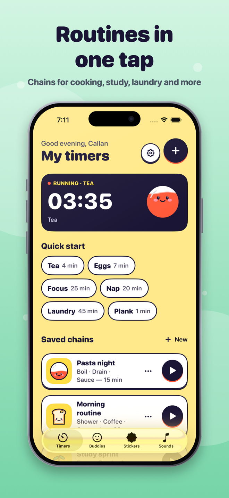
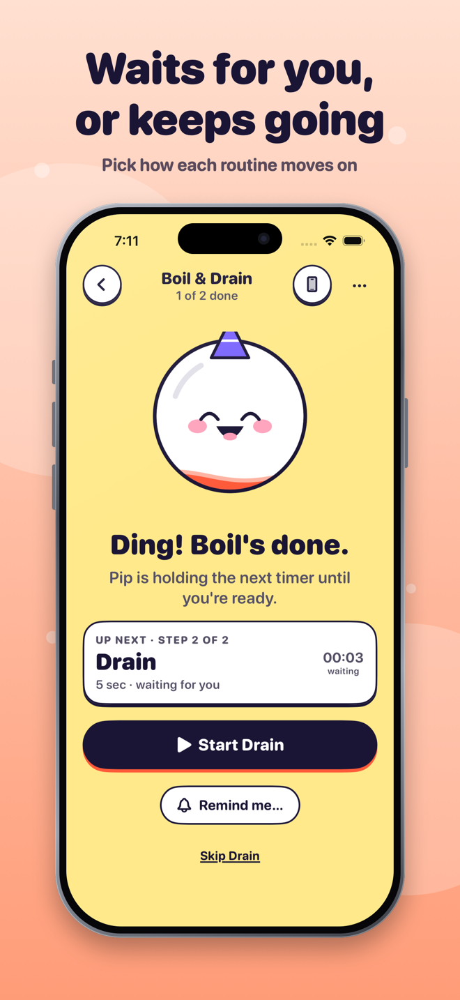
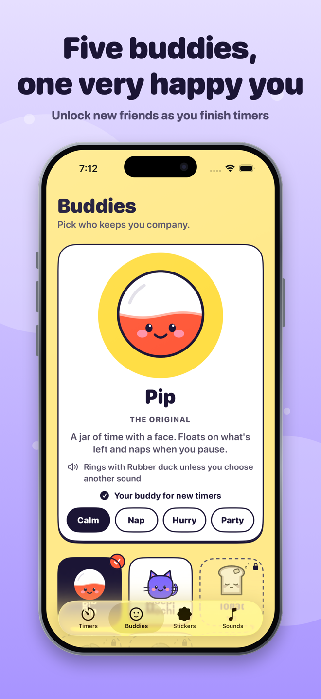
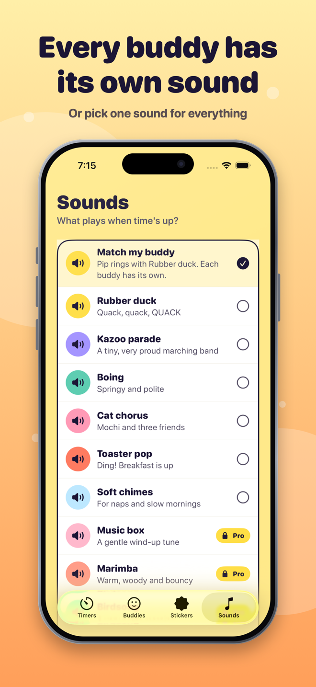
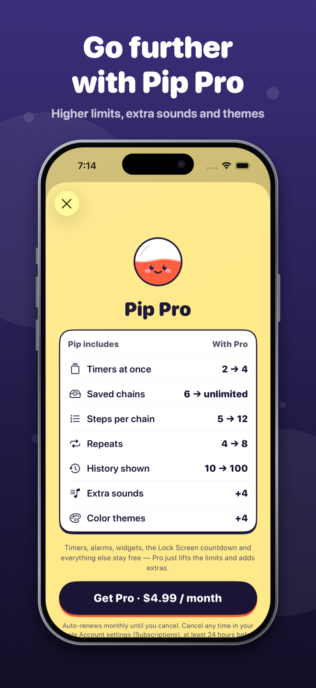

A buddy on your time
Pip floats on the time you have left, naps when you pause, and perks up in the last minute. Four more buddies join as you finish timers.
One countdown or a whole routine — easy to start, calm to follow, and a friendly face on the time you have left.
Free to use. Needs iPhone with iOS 26 or later.
Everything you need to time one thing — or the whole morning.
Pip floats on the time you have left, naps when you pause, and perks up in the last minute. Four more buddies join as you finish timers.
Try “focus 25 min then break 5 min, repeat 4 times”. Pip lines up the steps and you check them before anything starts.
Save chains like Pasta night or Study sprint. Steps can wait for you, or roll on automatically with one alarm at the end.
With your permission, Pip uses system alarms so a timer can ring when your phone is locked. Prefer quiet? Use notifications or keep it in the app.
Rubber duck, cat chorus, toaster pop and more. Pick one sound for everything, or one just for a single timer.
No streaks, no guilt. Stickers and buddies are small souvenirs you can ignore. Quiet display, dark mode, Dynamic Type and VoiceOver are built in.
Real screens from the app.





Every feature in Pip is free to use at launch. Later, an optional monthly Pip Pro will lift the limits below and add extras. Timers, alarms, widgets and the Lock Screen countdown will always stay free.
| What you get | Free | Pip Pro |
|---|---|---|
| Timers at once | 2 | 4 |
| Saved chains | 6 | Unlimited |
| Steps per chain | 5 | 12 |
| Repeats per chain | 4 | 8 |
| History shown | Latest 10 | Latest 100 |
| Sounds | 6 | 10 (4 extra) |
| Color themes | Sunny | 5 (4 extra) |
Planned: Pip Pro as a monthly subscription, $4.99 per month (price may vary by country). It renews automatically until cancelled; manage or cancel any time in your Apple Account settings. See the terms.
With your permission Pip uses iOS system alarms, which are made for this. You can also choose normal notifications (these follow your silent and Focus settings) or keep timers in the app only. Pip always shows which one a timer is using.
No. There are no accounts, ads, analytics or tracking, and Pip doesn’t use the network. Your timers, name and settings stay on your iPhone. Read the privacy policy.
Any time, in Settings → your name → Subscriptions on your iPhone. You keep Pro until the end of the period you paid for, then Pip goes back to the free limits. Nothing you made is deleted.
Email callans.creations1@gmail.com or visit the support page.